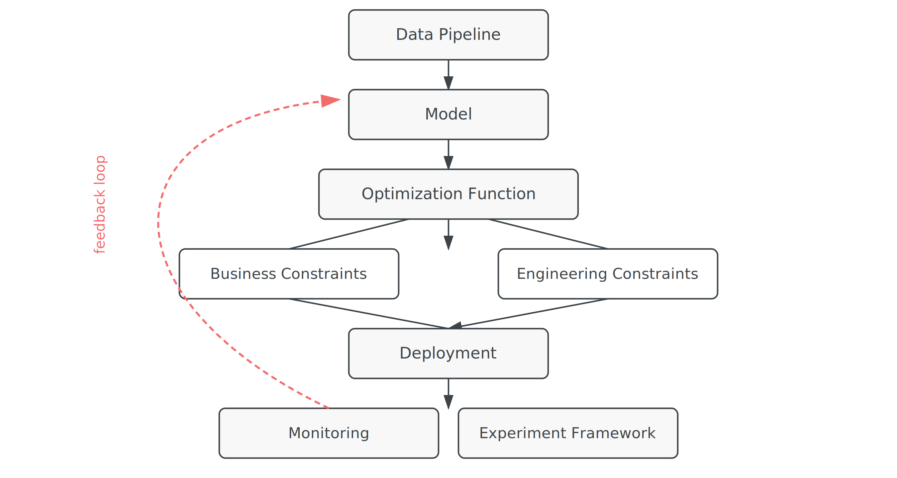

A Pricing Model Is Not a Pricing System
September 2026 | Applied Economics | Pricing Systems | ← Back to Blog
A pricing model gives you an estimate. A pricing system is what puts that estimate to work. This post walks through everything that lives between the two.
What a Model Actually Gives You
A pricing model gives you an estimate. Ideally, it's unbiased and low variance. You run the model, get a number, and it looks clean in the output. That's a real, necessary piece of work. It's also a small fraction of what it takes to actually price something in production.
"And then come all the things that don't show up in the regression output."
The System the Model Lives Inside
A system starts with a consistent data pipeline, then the model, then an optimization function that turns the estimate into an actual decision. None of that is visible in a regression summary, and all of it matters if the goal is to put the pricing model into production.

Two Different Kinds of Constraints
Business constraints are the ones most people think of first: price floors, contractual minimums, brand positioning rules, competitive limits. A model that ignores these can produce a mathematically defensible price that's operationally impossible to actually charge.
Engineering constraints are just as real, and easier to overlook from the analysis side. Latency matters because a price that takes too long to compute arrives after the customer has already moved on. Reliability matters because the system has to return a real number every time, an error or a blank isn't a graceful failure, it's a lost transaction. Scalability matters because a pricing function that works cleanly on a test set of a thousand rows can behave very differently at the actual volume of requests a live system receives. A model that's statistically excellent but violates any of these doesn't get deployed, or gets deployed and quietly fails.
Deployment Is a Beginning, Not an End
Once a pricing system is live, monitoring comes next: cancellation rates, satisfaction, fulfillment, retention. These aren't afterthoughts. They're how you know whether the model's assumptions are still holding once it's actually operating in the world it was built to affect. When something looks off, the system needs an experiment framework already in place, ready to test a hypothesis rather than needing to be built from scratch under pressure.
The Feedback Loop
What gets learned from monitoring and experimentation feeds back into the system. Sometimes that means correcting bias in the model itself, the estimate was wrong in some specific, identifiable way. Sometimes the problem is somewhere else entirely, in the data pipeline, in a constraint that was mis-specified, in an engineering assumption that didn't hold at scale. Knowing which one it is requires the monitoring and the experiment infrastructure to already exist, not to be assembled after something has already gone wrong.
The Actual Point
A pricing model gives you an estimate.
A pricing system is what puts that estimate to work.